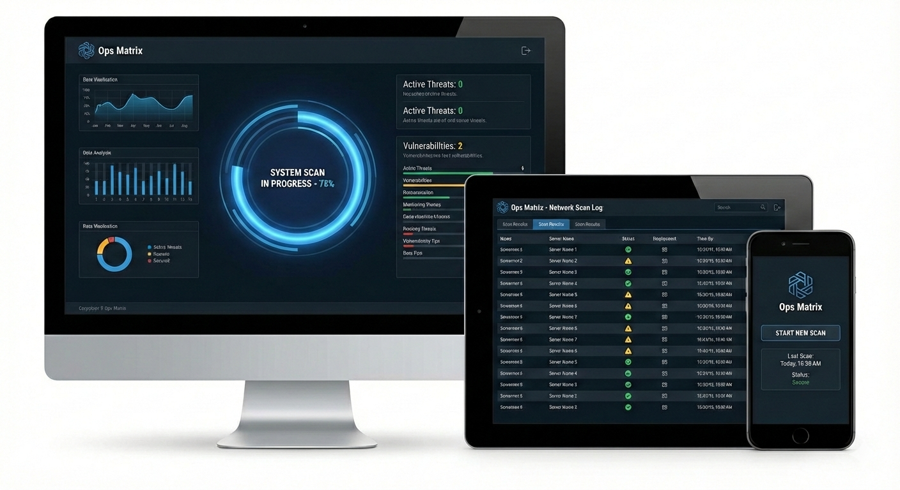
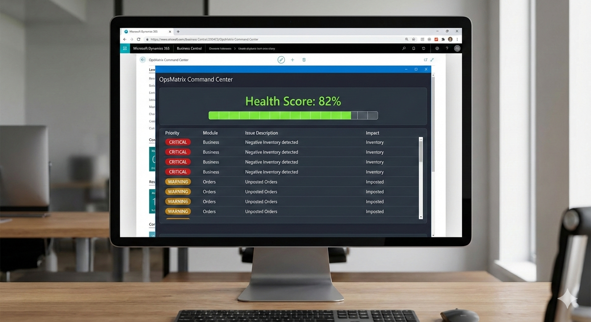

Ops Matrix

OpsMatrix was born from a simple observation: most businesses are sitting on hidden operational problems they don't know exist. Throughout my career working with ERP systems, manufacturing operations, supply chains, and enterprise IT environments, I repeatedly encountered the same pattern. Companies invest millions of dollars in software, processes, and infrastructure, yet critical inefficiencies remain buried beneath the surface. Inventory discrepancies, pricing errors, procurement waste, process bottlenecks, duplicate transactions, data quality issues, and workflow breakdowns quietly drain profitability every day.
The challenge is not that organizations lack data. In fact, most businesses have more data than ever before. The real problem is that the data is spread across ERP systems, databases, spreadsheets, and disconnected applications, making it nearly impossible for leadership teams to identify where the biggest opportunities for improvement exist. Valuable operational insights remain hidden inside thousands of transactions, records, and system configurations.

OpsMatrix was created to solve this problem. It is an operational intelligence platform that connects directly to a company's ERP and business systems to perform a comprehensive diagnostic scan of the organization. Rather than producing generic reports or dashboards, OpsMatrix analyzes business processes, identifies operational waste, uncovers hidden risks, and translates findings into prioritized, actionable recommendations. The platform helps organizations understand not only what is wrong, but also the financial impact of each issue and where they should focus first.
The vision behind OpsMatrix is to provide businesses with the equivalent of an MRI for their operations. Just as medical imaging reveals problems that cannot be seen from the outside, OpsMatrix exposes inefficiencies that traditional reporting often misses. Whether it's excess inventory, revenue leakage, supplier risks, procurement inefficiencies, order fulfillment delays, or process breakdowns, the platform helps organizations uncover the root causes of operational drag before they become larger business problems.
Ultimately, OpsMatrix exists to help companies make better decisions, improve profitability, and operate more efficiently. By transforming complex operational data into clear business insights, the platform empowers leadership teams to move beyond intuition and make improvements based on measurable facts. The goal is simple: help businesses eliminate operational waste, increase performance, and unlock value that already exists within their organization.

The technical foundation of OpsMatrix began with a library of advanced SQL-based diagnostic scans designed to analyze ERP databases directly. The original vision was to identify operational inefficiencies, process bottlenecks, data quality issues, and revenue leakage by querying transactional and master data stored within an organization's ERP system. While this approach proved highly effective, it quickly became clear that a one-size-fits-all solution would not adequately address the differences in data structures, customization models, and security requirements across modern ERP platforms.
To support Microsoft Dynamics 365 Business Central, OpsMatrix has evolved beyond direct database analysis by leveraging Microsoft's AL development framework. Rather than relying solely on SQL access, custom AL extensions are used to expose and collect operational data in a way that aligns with Business Central's cloud-first architecture and security model. This allows diagnostic logic to operate within the application layer, making the platform more scalable, maintainable, and compatible with both cloud and on-premises deployments. By combining AL-based data collection with external analytics and reporting capabilities, OpsMatrix can deliver the same deep operational insights while respecting the design principles of the modern Dynamics ecosystem.
Looking forward, the long-term strategy is to develop native integration frameworks for other major ERP platforms using the technologies and development methodologies most appropriate for each environment. For SAP environments, this may include leveraging SAP HANA views, APIs, and extension frameworks; for Oracle ERP platforms, Oracle Cloud APIs and database services; for Infor, the Infor OS and associated integration technologies; and for Sage, platform-specific APIs and extensibility tools. Rather than forcing every customer into a single integration model, OpsMatrix is being designed as a flexible diagnostic platform that adapts to the architecture of each ERP system while maintaining a consistent set of operational intelligence capabilities. This approach enables organizations to gain meaningful insights from their business data regardless of the ERP platform they have chosen.
We currently have the D365 AL code repository as private, but you can check out the SQL scripts that we are using as the foundation for this application.
Check out the repository here